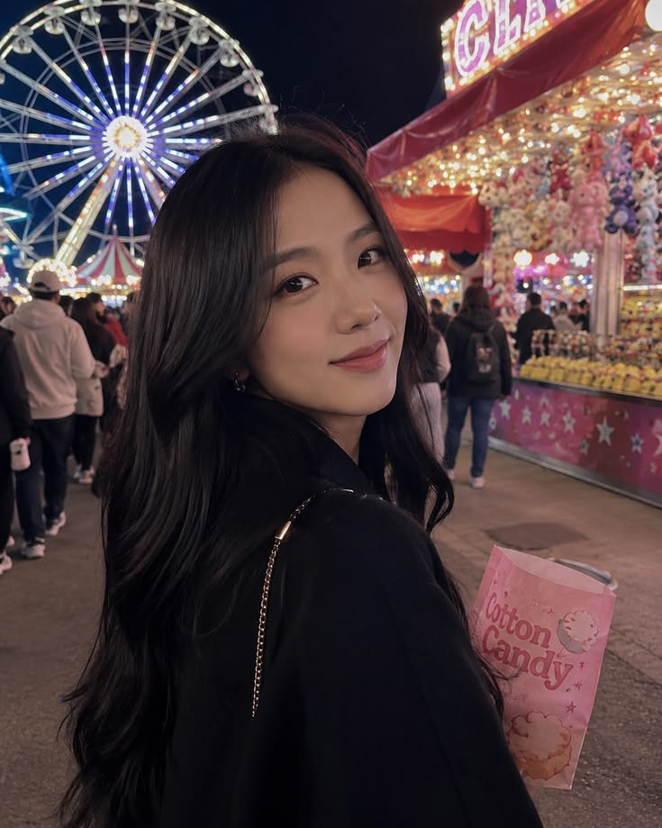
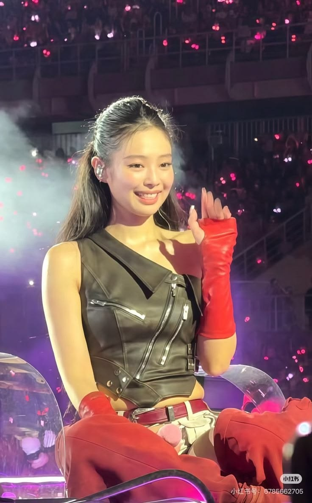
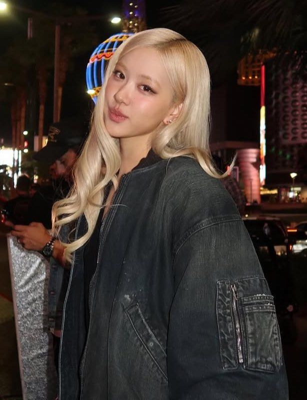
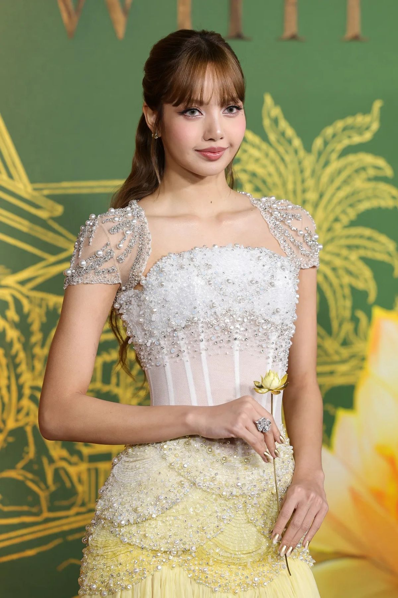

Here are members of BLACKPINK
Jisoo (Kim Ji-soo)

- Born: January 3, 1995, in Gunpo, Gyeonggi Province, South Korea.
- Position: Lead vocalist and visual.
- Fun facts: She is known for her elegant beauty and quirky sense of humor. She made her solo debut in 2023 with the album Me, featuring the title track "FLOWER." Jisoo is also an actress, starring in the drama Snowdrop.
Jennie (Jennie Kim)

- Born: January 16, 1996, in Cheongdam-dong, Seoul, South Korea.
- Position: Main rapper and lead vocalist.
- Fun facts: Jennie is often called the "Human Chanel" due to her close relationship with the luxury brand. She debuted solo in 2018 with "SOLO" and later released "You & Me." She is known for her fierce stage presence and trendsetting fashion.
Rosé (Roseanne Park / Park Chae-young)

- Born: February 11, 1997, in Auckland, New Zealand, and raised in Melbourne, Australia.
- Position: Main vocalist and lead dancer.
- Fun facts: Rosé is celebrated for her unique, soulful voice. Her solo debut in 2021 with the album R produced the record-breaking track "On The Ground." She is also a skilled guitarist and often plays during live performances.
Lisa (Lalisa Manoban)

- Born: March 27, 1997, in Buriram, Thailand.
- Position: Main dancer, lead rapper, and maknae (youngest member).
- Fun facts: Lisa is the first non-Korean member of BLACKPINK and a global fashion icon. Her solo debut in 2021 with Lalisa made her the first K-pop solo artist to win an MTV Video Music Award. She is known for her incredible dance skills and charismatic performances.